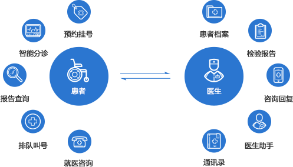

{% include "../public/header.html" %}
<script type="text/javascript">
    $(".nav-right li").eq(0).removeClass("coe");
    $(".nav-right li").eq(1).addClass("coe");
</script>
<div class="banners" style="background: url(../image/hand.png);background-position:60%;">
    <a href="#" style="font-weight:bold;display:block;width:200px;height:60px;color:#2B76D0;font-size: 24px;position:absolute;left:277px;top:310px;text-align: center;line-height: 60px;">掌上医院</a>
</div>
<div class="content" style="height:1000px;">
    <div class="cons">
        <div class="left-list">
            <a href="hand.html" >掌上医院</a>
            <a href="access.html">患者随访</a>
            <a href="appiont.html" style="background: #2B76D0;color:#fff;">医技预约</a>
            <a href="custom.html">客户关系管理</a>
        </div>
        <div class="right-list">
            <div class="list-top">
                <span style="font-size: 22px;color:#232323;font-weight: bold;line-height: 50px;">医技预约</span>
            </div>
            <div class="list-middle">
                <span style="font-size: 16px;color:#232323;font-weight: bold;">业务流程图</span>
                <div class="access-img">
                    
                </div>
            </div>

            <div class="hand-product">
                <span style="font-size: 16px;color:#232323;font-weight: bold;line-height: 50px;">医院综合检查预约系统</span>
                <p style="line-height: 50px;font-size: 14px;color:#232323;">1.支持单体医院使用，也支持多医院共同使用，并可灵活设置。</p>
                <p style="line-height: 50px;font-size: 14px;color:#232323;">2.包括区域版、医院版和社区医院版等不同版本，满足不同客户的多样需求。</p>
                <p style="line-height: 50px;font-size: 14px;color:#232323;">3.良好的架构设计，强有力地保证系统和数据的安全。</p>
            </div>

        </div>
    </div>
</div>
{% include "../public/footer.html" %}